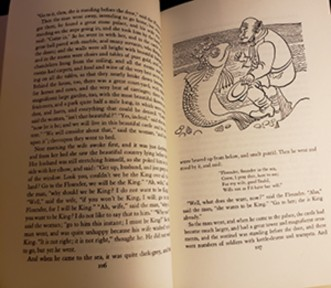
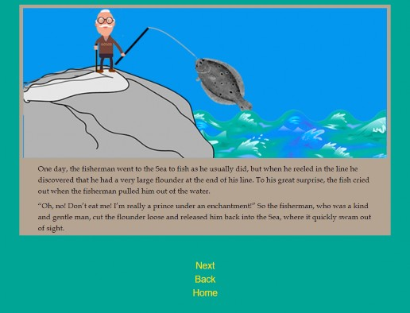
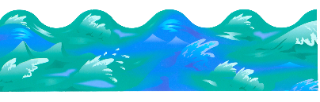

This is a story about remediation!
A long time ago, the Grimm Brothers wrote down and published a bunch of old stories and folk tales..
Later, many of these stories were re-written, re-told, illustrated, and refined.

One day, for a narrative project, I created a website, using a re-written version of one of the old oral tales written down by the Grimm Brothers. I used my own words to write the gist of the story as it was written down in the book, The Complete Grimm’s Fairy Tales, published by Pantheon Books in New York. Pantheon books copyrighted this work in 1944 and renewed the copy- right in 1972. I purchased this book some- time after that.
First, I read the story, then re-wrote it in my own words from memory of the general idea of the story, which was not very similar to most of the version in the fairy tale collection, but which pretty much preserved the main ideas of the tale.
“One day, the fisherman went to the Sea to fish as he usually did, but when he reeled in the line he discovered that he had a very large flounder at the end of his line. To his great surprise, the fish cried out when the fisherman pulled him out of the water.
“Oh, no! Don’t eat me! I’m really a prince under an enchantment!”
So the fisherman, who was a kind and gentle man, cut the flounder loose and released him back into the Sea, where it quickly swam out of sight.”
Next, I chose clip art images to add some color and imagery to the project. I carefully selected bits of imagery from Google Images that were labeled “free” and did not contain any kind of copyright overlay or watermark.
I then used Adobe Photoshop and Illustrator and a little of my own imagination to combine and augment these images to illustrate my own version of the old tale.

My final product is an interactive site where you can click through a tale with its origins deep in history using today’s technology!
Created by Tracy Lyon http://dtc-wsuv.org/tlyon18/sequential/
